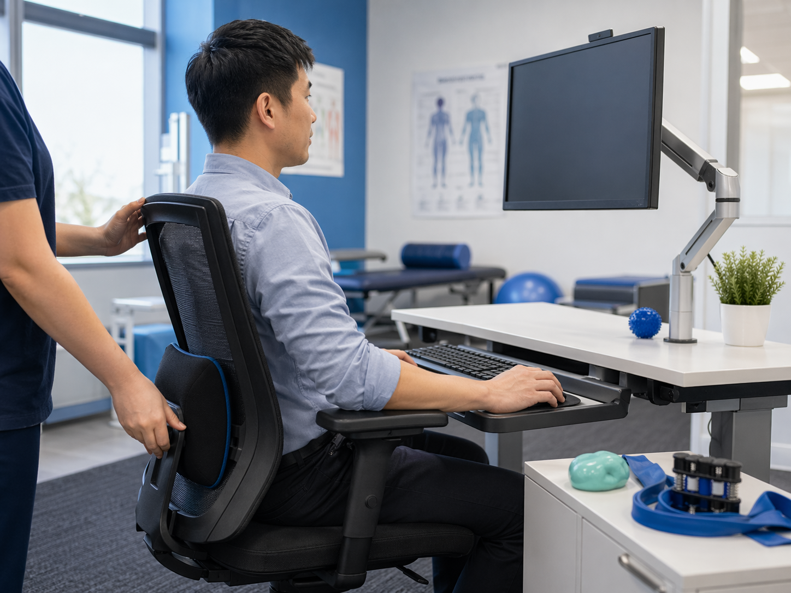

Activities of Daily Living assessment and retraining
Assessment of independent living tasks including meal preparation, shopping, personal hygiene, housework, money management and telephone use.
- Task modification and equipment recommendations
- Home modification or care assistance advice
- Practical strategies for safe independent living